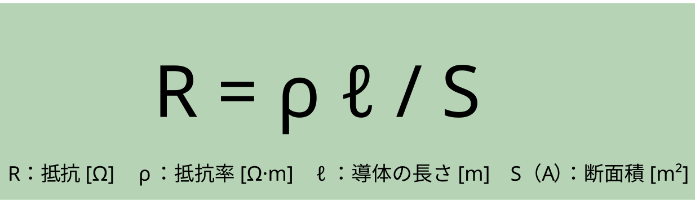
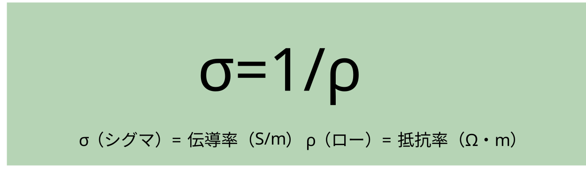
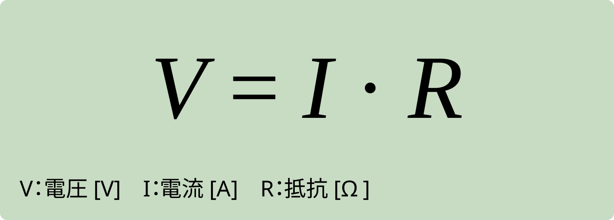
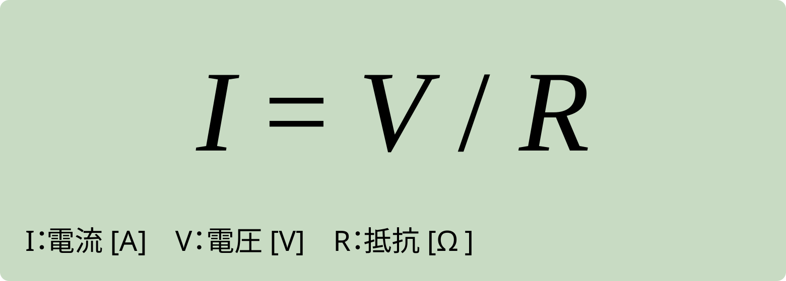
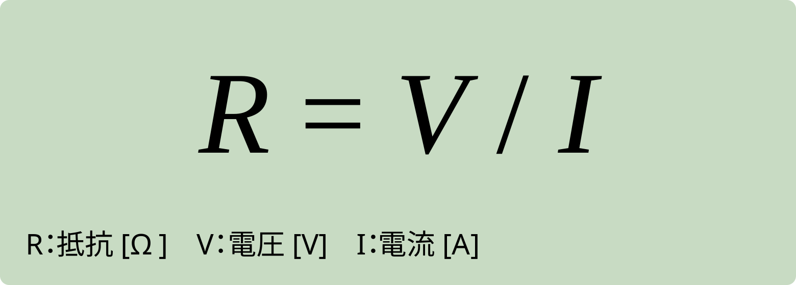
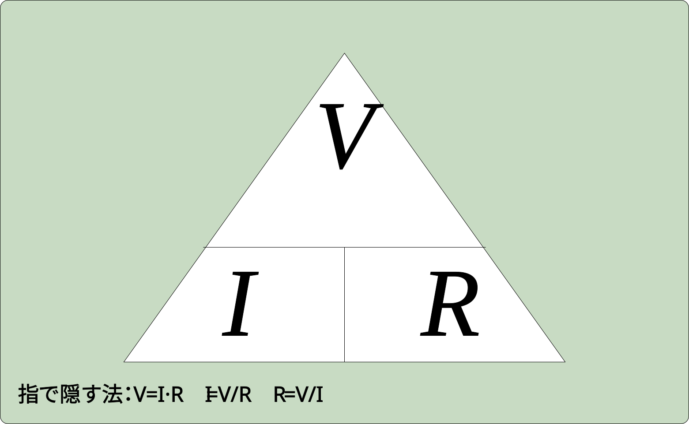
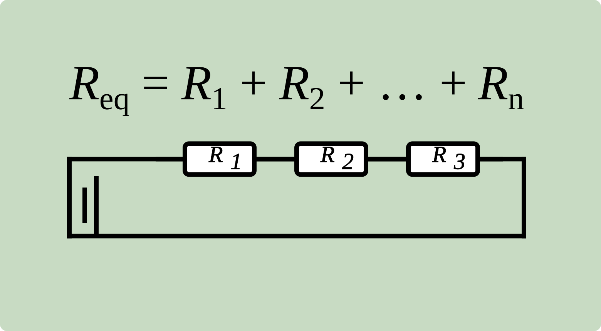
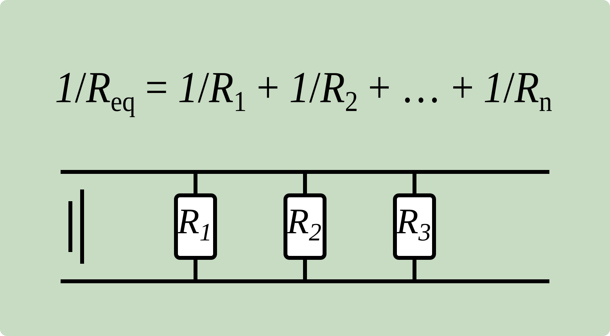

抵抗率 ρ（ロー）
抵抗の基本関係：
導体の抵抗 R は「長さ l に比例」「断面積 S に反比例」。 物質ごとの固有値 ρ（抵抗率） を用いると、次式で表されます。

覚えよう！
- ρ は物質固有値（材質で決まる）。
- 定義：断面積 1 m²、長さ 1 mの導体の両端の抵抗。
- 長さ ℓ と断面積 S の影響は逆方向（ℓ↑→R↑、S↑→R↓）。
- 単位は Ω・m（オーム・メートル）。
出る出るポイント
-
比例・反比例は式で固定：
R = ρ · ℓ / S
同じ材質なら ρ は一定として扱う。 - 断面積Sの落とし穴：直径が2倍 → 断面積は4倍 → Rは1/4。半径・直径の2乗を忘れない。
- 単位換算で落とす：mm² → m²（
1 mm² = 1×10⁻⁶ m²）。Sの換算ミスは即死。 - ρが小さいほど通しやすい（導体寄り）、ρが大きいほど通しにくい（絶縁体寄り）。次の「導電率σ」とセットで来る。
- 定義の言い換え：「1mの長さ」「1m²の断面積」の導体の抵抗＝抵抗率ρ。文章問題でそのまま出る。
導電率 σ（シグマ）
導電率（電気伝導率）は、物質の電気の流れやすさを表す量です。 値が大きいほど電気を通しやすく、抵抗は小さくなります。
導電率は抵抗率（流れにくさ）ρの逆数で、 σ = 1 / ρ。単位は S/m（ジーメンス毎メートル）。
形状に依存する実際の通しやすさ（コンダクタンス）は G = σ·A/L（A：断面積、L：長さ）。抵抗は R = ρ·L/A。 つまり 「材質（σ）×形状」で決まります。
液体（電解質）では塩分や酸の濃さの指標として用います。 例：食塩水は濃いほど σ↑（※通常は 25℃ への温度換算で管理）。

σ = 1/ρ
覚えよう！
- 定義：導電率は通しやすさ、抵抗率は通しにくさ。
- 関係式：σ = 1/ρ
- 単位：σ：S/m、ρ：Ω·m
- 形状とセット：R = ρ·L/A、G = σ·A/L
出る出るポイント
- 逆数トラップ：ρ↑ならσ↓。大小関係を逆に書かせる。
- 単位トラップ：Gの単位はS、σはS/m（ここ混ぜて落とす）。
- 換算で落とす：1 mS/cm = 0.1 S/m（mS/cm ⇄ S/m）。
- 温度依存：金属はT↑でσ↓、電解質溶液はT↑でσ↑（これも逆にしがち）。
- 純水の扱い：純水はσが小さい。塩分が混ざるとσ↑（“純水も通す”は×）。
オームの法則
オームの法則は、抵抗 R の両端の電圧 V と電流 I の関係を表します。
基本式は V = I・R です。
したがって、同じ抵抗では V を上げると I は増え、同じ電圧では R を大きくすると I は小さくなります。 ここでの単位は V：ボルト [V]、I：アンペア [A]、R：オーム [Ω] を用います。
オームの法則は、直流（DC）や低周波で、V–I の関係が直線になる 「オーム性（線形）抵抗」に適用します（温度変化が大きい場合は注意）。

V = I・R

I = V/R

R = V/I

V = I・R）。
覚えよう！
- 基本式：
V = I・R（3 量の関係はこれで固定）。 - 変形式：
I = V/R、R = V/I（出題はこの形が多い）。 - 単位セット：V [V]、I [A]、R [Ω]（まず単位を揃える）。
- 適用：オーム性（線形）抵抗が前提（電球・半導体・整流器などは注意）。
出る出るポイント！
- 接頭語トラップ：mA＝10−3A、kΩ＝103Ω、MΩ＝106Ω。ここで落ちる。
- 直列・並列の順番：まず合成抵抗（直列：足す／並列：逆数和）→ その後に
V = I・R。 - 電力の近道：
P = V・I = I²R = V²/R（単位は W）。 - 温度でズレる：金属抵抗は温度↑で R↑（一定とみなせる条件か確認）。
- 測定のひっかけ：リード線抵抗・内部抵抗が乗る（小さい R を測るほど効く）。
直列と並列の合成抵抗
抵抗のつなぎ方には直列と並列があります。直列は同じ電流が順番に流れます。 並列は同じ電圧が各枝にかかります。合成（等価）抵抗は次の式で求めます。
直列の定義
- 電流 どこでも同じ（電流一定）
- 電圧 抵抗に比例して分担（電圧分割）
- 合成 足し算
Req = R1 + R2 + R3 + …
並列の定義
- 電圧 どこでも同じ（電圧一定）
- 電流 抵抗に反比例して分流（電流分割）
- 合成 逆数の和
1/Req = 1/R1 + 1/R2 + 1/R3 + …


電池の仕組み
電池は、酸化還元反応の化学エネルギーを電気エネルギーに変換する装置です。 金属などの電極を電解液に浸し、外部回路を導線でつなぐと電流が流れます。
負極（アノード）では酸化が起こり、電子を放出します（電子は外部回路へ流れ出ます）。 正極（カソード）では還元が起こり、外部回路から来た電子を受け取ります。
※電池（ガルバニ電池）では「負＝アノード」「正＝カソード」です。 電気分解では極性が逆なので区別して覚えましょう。
溶液中では電荷のつり合いを保つためにイオンが移動します（電解液・塩橋・セパレータの役割）。 電子の流れは負極→正極、電流（約束方向）は正極→負極です。
代表例（ダニエル電池の型）
- 負極：Zn → Zn2+ + 2e−（酸化）
- 正極：Cu2+ + 2e− → Cu（還元）
起電力 E は両極の電位差で決まり、溶液中のイオン濃度（濃度条件）が変わると電位が変化し、 起電力も変わります（測定では温度・濃度条件をそろえます）。
覚えよう！
- 対応：電池（発電）は「負＝アノード（酸化）」「正＝カソード（還元）」
- 向き：電子は 負極→正極／電流（約束方向）は 正極→負極
- 語呂：「酸化はマイ（−）、還元はプラ（＋）」で混乱を防ぐ
出る出るポイント！
- 端子電圧：
V = E − I r（r：内部抵抗）→ I が大きいほど V は下がる - 直列：電圧が加算（例：1.5V×2本→3.0V）
- 並列：電圧は同じで、電流供給力が増える（内部抵抗は並列で小さくなる）
- 濃度の影響：起電力 E は電位差で決まり、濃度が変わると E も変わり得る
ひっかけ注意！
- 正負の混同：電池（発電）は「負＝アノード／正＝カソード」。電気分解は“正負が逆”になりやすい
- でもここは不変：アノード＝酸化、カソード＝還元（ここだけは電池でも電気分解でも共通）
- 流れの混同：電子の向き（負→正）と、電流の向き（正→負）を逆に書くミスが多い
- 安全：漏液・ガスは腐食性／可燃性のリスク。作業は換気＋保護具
起電力の大きさ
起電力（E）は、電池の2電極間に生じる理想的な電位差です （外部に電流を流さないときの電圧）。
起電力は基本的に、正極と負極の電極電位差で決まります （目安：E ＝ 正極 − 負極）。 つまり、組合せが違えば E も変わる、が最重要です。
覚えよう！
- 正極＝還元、負極＝酸化。
- 電子は 負極 → 正極、電流（約束）は 正極 → 負極。
- 実際に電流が流れると、端子電圧は V = E − I r（r：内部抵抗）でEより小さくなる。
出る出るポイント！
- 直列・並列： 直列はEが加算（内部抵抗rも加算）。 並列はEは同じで、内部抵抗rが下がり電流供給力が増える。
- 負極の見分け： 金属のイオン化傾向が大きい方が負極（溶けやすい）になりやすい。
- 代表値： ダニエル電池の起電力はおよそ1.10 V（用語・基準値レベルで押さえる）。
ひっかけ注意！
- 端子電圧＝起電力と決めつけない。 負荷をつないだ瞬間、V = E − I rで下がる。
- 濃度が高いほど必ずEが大きいとは限らない。 まずは極の組合せ（電位差）で考える。 迷ったら「負極＝イオン化傾向が大きい金属」で整理。
- 電子の流れと電流（約束）を逆に書いて落とす。 外部回路は「電子：負→正」「電流：正→負」。
- 直列・並列の取り違えに注意。 直列はEもrも足し算、並列はEは同じでrが小さくなる。
主な電池の起電力と素材
一次電池
| 電池の 種類 |
起電力 | 正極 | 負極 | 電解液/電解質 |
|---|---|---|---|---|
| マンガン乾電池 | 1.5V | 二酸化マンガン | 亜鉛 | 塩化亜鉛/塩化アンモニウム |
| アルカリ マンガン乾電池 |
約1.5V | 二酸化マンガン | 亜鉛 | 水酸化カリウム |
| リチウム電池 | 約3.0V | 二酸化マンガン 硫化鉄など |
リチウム | 非水系 有機電解液 |
| 酸化銀 電池 |
約1.55V | 酸化銀 | 亜鉛 | 水酸化カリウム 水酸化ナトリウム |
| 空気亜鉛電池 | 約1.3V | 酸素 | 亜鉛 | 水酸化ナトリウム |
※一次電池：放電のみの使い切り
二次電池
| 電池の 種類 |
起電力 | 正極 | 負極 | 電解液/電解質 |
|---|---|---|---|---|
| 鉛蓄電池 | 約2.0V | 二酸化鉛 | 鉛 | 希硫酸 |
| ニッケル カドミウム電池 |
約1.3V | ニッケル酸化物 | カドミウム | 水酸化カリウム |
| ニッケル 水素電池 |
約1.35V | ニッケル酸化物 | 水素吸蔵 合金 |
水酸化カリウム |
| リチウム イオン電池 |
約4.0V | リチウム複合 酸化物 |
炭素 | 非水系 有機電解液 |
| ナトリウム 硫黄電池 |
約2.1V | 硫黄 | ナトリウム | β・アルミナ |
※二次電池：外部電池からの充電で繰り返し使用。
出る出るポイント!
- 一次＝充電不可／二次＝充電して再使用（まずここを取り切る）。
- 電解液（電解質）はセット暗記：マンガン＝塩化アンモニウム/塩化亜鉛、アルカリ＝水酸化カリウム、鉛＝希硫酸…のように「種類→電解液」で即答。
- 起電力の代表値：1.5V系／約1.55V（酸化銀）／約1.3V（空気亜鉛）／約3.0V（リチウム一次）／約2.0V（鉛蓄）など、よく混ぜて出る。
ひっかけ注意!
- アルカリ＝水酸化カリウム、マンガン乾電池＝塩化アンモニウム/塩化亜鉛。入れ替えひっかけ注意。
- 酸化銀電池＝約1.55V、空気亜鉛＝約1.3V（1.5Vと混同させる出題あり）。
- 二次電池：鉛＝希硫酸、Ni系＝KOH、Li-ion＝非水系。電解液セットで覚える。
クイズ
次は第2章10節：静電気に進みます。